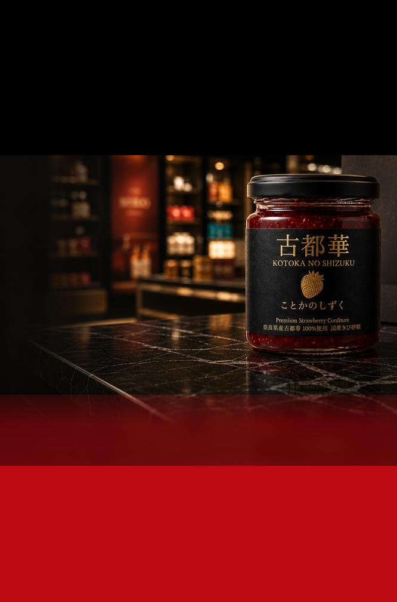

02 KOTOKA

Nara Duty-Free Gift
A premium Kotoka confiture from Nara.一年中、奈良の赤い香りを。

01 / NARA
About Nara
Nara is known as one of Japan's ancient capitals. Temples, mountain scenery, seasonal light, and a quiet sense of time still shape the region today. 奈良は、日本の古い都として知られる土地です。寺社、山並み、季節の光、静かな時間。長い歴史の中で受け継がれてきた美意識が、今も日常の中に残っています。
Kotoka no Shizuku is made from Kotoka, a strawberry variety born in Nara. It is not an ordinary souvenir, but a food gift shaped to carry the character of Nara. 古都華の雫は、そんな奈良で生まれたブランドいちごを使ったコンフィチュールです。観光地の土産ではなく、奈良の価値をきちんと贈れる食品ギフトとして仕立てています。
02 KOTOKA

03 PRODUCT
03 TASTE
Product Sheet